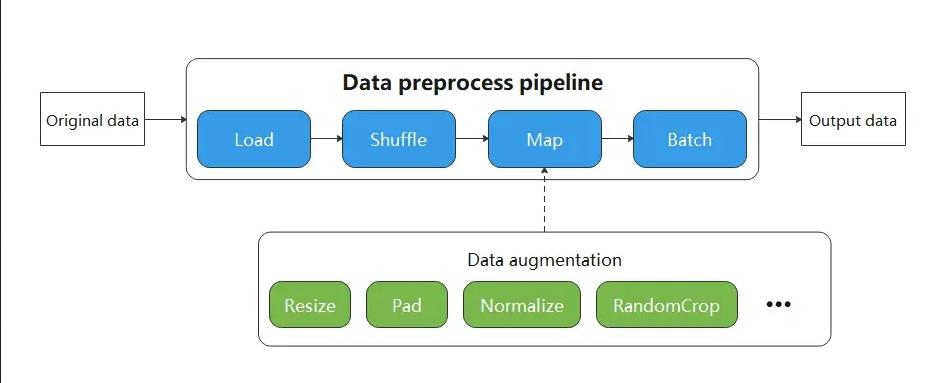

Lightweight Data Processing

When resource conditions permit, in order to pursue higher performance, data augmentation operators are generally executed in the data pipeline mode.
The biggest character of execution based on data pipelinemode users have to define the map operator. As shown in the figure below, the Resize, Crop, HWC2CHW operators are scheduled by the map operator, which is responsible for starting and executing the given data augmentation operators, and mapping and transforming the data of the data pipeline.

Although constructing a data pipeline can process input data in batches, the API design of the data pipeline requires the user to start from constructing the input source, and gradually defines the individual processing operators in the data pipeline. Only when defining the map will it involve data augmentation operators that are highly related to the user input data.
Undoubtedly, users only want to focus on the code that is most relevant to them, but other codes with less relevance add unnecessary burdens to the user throughout the code scene.
Therefore, MindSpore provides a lightweight data processing way, called Eager mode.
In the Eager mode, the execution of data augmentations will not rely on the map operator. Instead, the data augmentation operator is executed in the form of a functional call. The code will be simpler and the results are obtained immediately. It is recommended to be used in lightweight scenarios such as small data augmentation experiments and model inference.

MindSpore currently supports executing various data augmentation operators in the Eager mode, as shown below. For more details, please refer to the API documentation.
Submodule transforms, an image augmentation operator implemented based on OpenCV/Pillow.
Submodule transforms, text processing operators implemented based on Jieba, ICU4C etc.
Submodule transforms, a general-purpose data augmentation operator implemented based on C++/Python/NumPy.
Eager Mode
The following is a brief introduction to the use of the Eager mode for data augmentation operators of each module. With the Eager mode, you only need to treat the data augmentation operator itself as an executable function.
Data Preparation
The following sample code downloads the image data to the specified location.
import os
import requests
requests.packages.urllib3.disable_warnings()
def download_dataset(dataset_url, path):
filename = dataset_url.split("/")[-1]
save_path = os.path.join(path, filename)
if os.path.exists(save_path):
return
if not os.path.exists(path):
os.makedirs(path)
res = requests.get(dataset_url, stream=True, verify=False)
with open(save_path, "wb") as f:
for chunk in res.iter_content(chunk_size=512):
if chunk:
f.write(chunk)
print("The {} file is downloaded and saved in the path {} after processing".format(os.path.basename(dataset_url), path))
download_dataset("https://obs.dualstack.cn-north-4.myhuaweicloud.com/mindspore-website/notebook/datasets/banana.jpg", ".")
vision
This example will use operators from the mindspore.dataset.vision module to transform a given image.
You only need to focus on what data augmentations have to use, not any code for the data pipeline.
The Eager mode of the vision operator supports numpy.array or PIL.Image type data as input parameters.
import numpy as np
from PIL import Image
import matplotlib.pyplot as plt
import mindspore.dataset.vision as vision
img_ori = Image.open("banana.jpg").convert("RGB")
print("Image.type: {}, Image.shape: {}".format(type(img_ori), img_ori.size))
# Define a Resize op and execute it immediately
op1 = vision.Resize(size=(320))
img = op1(img_ori)
print("Image.type: {}, Image.shape: {}".format(type(img), img.size))
# Define a CenterCrop op and execute it immediately
op2 = vision.CenterCrop((280, 280))
img = op2(img)
print("Image.type: {}, Image.shape: {}".format(type(img), img.size))
# Define a Pad op and execute it immediately
op3 = vision.Pad(40)
img = op3(img)
print("Image.type: {}, Image.shape: {}".format(type(img), img.size))
# Show the result
plt.subplot(1, 2, 1)
plt.imshow(img_ori)
plt.title("original image")
plt.subplot(1, 2, 2)
plt.imshow(img)
plt.title("transformed image")
plt.show()
The output is as follows:
Image.type: <class 'PIL.Image.Image'>, Image.shape: (356, 200)
Image.type: <class 'PIL.Image.Image'>, Image.shape: (569, 320)
Image.type: <class 'PIL.Image.Image'>, Image.shape: (280, 280)
Image.type: <class 'PIL.Image.Image'>, Image.shape: (360, 360)
The following shows the processed image.

text
This example will transform the given text by using the tranforms operator in the text module.
Eager mode of the text operator supports numpy.array type data as input parameters.
import mindspore.dataset.text.transforms as text
import mindspore as ms
# Define a WhitespaceTokenizer op and execute it immediately
txt = "Welcome to Beijing !"
txt = text.WhitespaceTokenizer()(txt)
print("Tokenize result: {}".format(txt))
# Define a ToNumber op and execute it immediately
txt = ["123456"]
to_number = text.ToNumber(ms.int32)
txt = to_number(txt)
print("ToNumber result: {}, type: {}".format(txt, type(txt[0])))
Tokenize result: ['Welcome' 'to' 'Beijing' '!']
ToNumber result: [123456], type: <class 'numpy.int32'>
transforms
This example will transform the given data by using the c_tranforms operator in the transforms module.
Eager mode of transforms operator supports numpy.array type data as input parameters.
import numpy as np
import mindspore.dataset.transforms as trans
# Define a Fill op and execute it immediately
data = np.array([1, 2, 3, 4, 5])
fill = trans.Fill(0)
data = fill(data)
print("Fill result: ", data)
# Define a OneHot op and execute it immediately
label = np.array(2)
onehot = trans.OneHot(num_classes=5)
label = onehot(label)
print("OneHot result: ", label)
Fill result: [0 0 0 0 0]
OneHot result: [0 0 1 0 0]